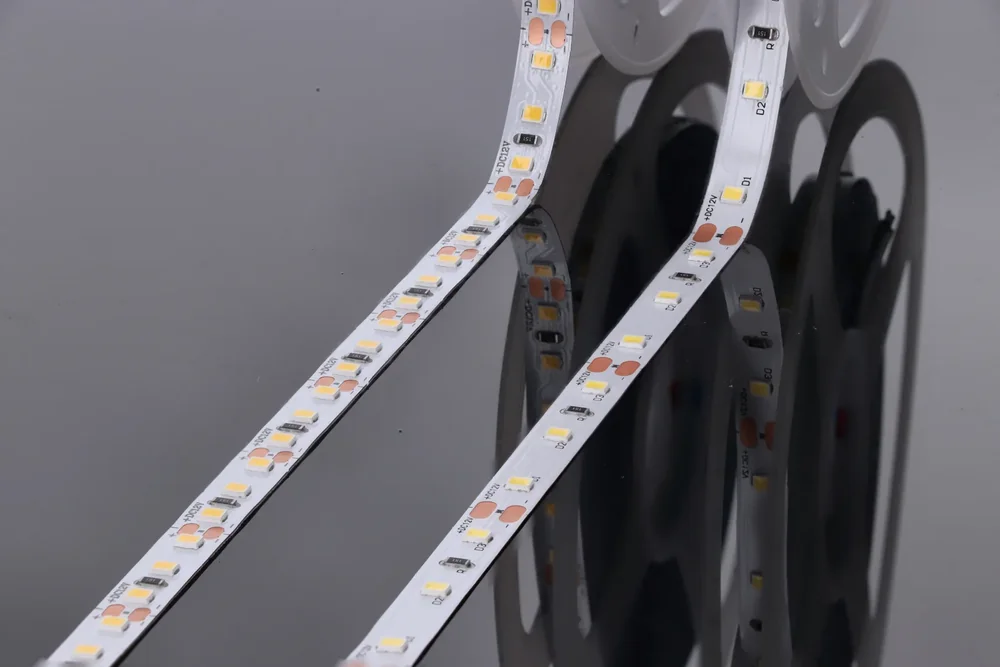

SPRAWDZONA INSTALACJA 12 V
Premium 60 / 120
Dwa warianty do projektów domowych i komercyjnych: od światła we wnęce po doświetlenie blatu.
5lat gwarancji
dla serii Premium 60 / 120
Skomponuj zestaw w 3D dla serii Premium 60 / 120
Studio pokazuje modele z dostępnej biblioteki. O wariant tej serii zapytaj dział sprzedaży.

POZNAJ SERIĘ
Światło do Twojego projektu.
Zaprojektowane i wyprodukowane w Polsce modele 60 i 120 LED/m służą do oświetlenia domowego i komercyjnego. Seria opiera się na zasilaniu 12 V oraz podłożu PCB z miedzią 3 oz.
Wariant 60 LED/m wybierzesz do wnęk, sufitów podwieszanych i cokołów meblowych. Model 120 LED/m sprawdza się w oświetleniu roboczym, pod szafkami kuchennymi oraz w korytarzach. Profil i osłona pomagają dopasować rozproszenie światła.
Gdzie się sprawdzi?
Wnęki, cokoły, szafki kuchenne i korytarze.